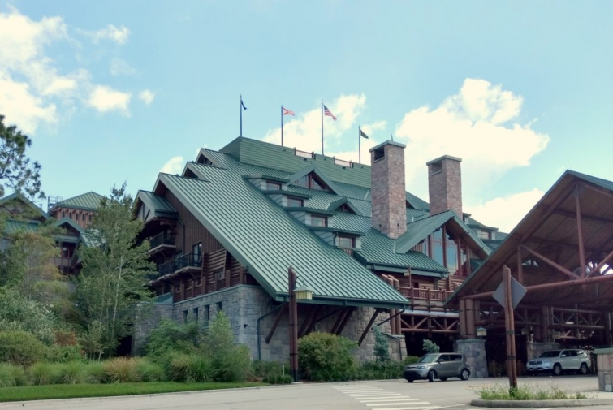
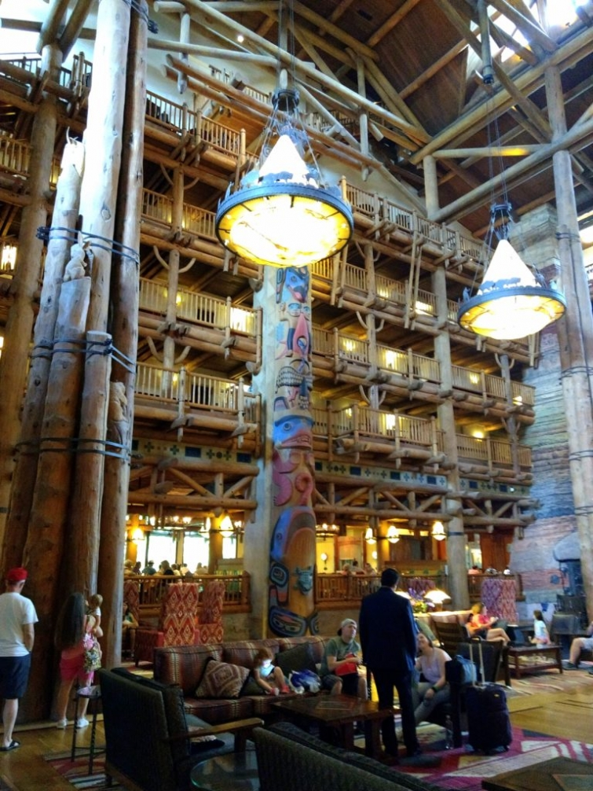

.png)
.PNG)
.PNG)
.PNG)
.PNG)
.PNG)
.JPG)
.JPG)
.PNG)
.PNG)


Please forgive my non-seasonal post here. I am trying to catch up on all the things I missed sharing with you from last year. Last fall (yes, fall!) my husband and I made a trip to Walt Disney World. We had been there with friends. We had taken our children, and we took our mothers the previous year, but we had never made a trip there with just the two of us.

It was wonderful!! (We may never take our kids again. LOL) We stayed at Wilderness Lodge for the first part of the trip. I have written about that amazing building before – modeled after the Old Faithful Inn in Yellowstone National Park, but we had never stayed there.

The lobby is very impressive. I think the rooms are a little on the small size, but they were certainly nice enough for us.

We were staying on the concierge level because I had watched for months to get a good special. Chocolates were waiting on us in our room. (Always a good sign!)

This was the view from our window. You can see the relatively new cabins that are part of the resort and the Contemporary Resort off in the distance.

We arrived on a Sunday afternoon in mid September with tickets in hand for Mickey’s Not So Scary Halloween party. I just love this Disney event! And I was hoping for low crowds this early in the season. We ate lunch, checked into our room, and then hopped on one of the boats that take you to the park.
You do not have to buy a park ticket since your ticket for MNSSHP gets you in after 4:00 – which is a good deal if you can stay up until the park closes at midnight. Our first stop in the park was to get one of the “party only” foods – candy corn ice cream. It was good but didn’t really taste like candy corn to me.

It was fun to see so many people dressed for the event – many in costumes, and many like us with matching shirts. We were able to ride a number of rides with little to no wait. After a few hours we had dinner then found a place to sit for the fireworks.

The Halloween fireworks are about the best there are at Disney, (in my opinion) and that particular show is only done during the MNSSHP. The parade for the party is done twice during the night with the earlier one more crowded. So we opted to go to the second parade that evening. You can see that even it was still quite crowded.

The previous year we had gone to the 1st parade and did not have great seats to view it. This year we snagged a spot right on Main Street, and wow did it make a difference!! We were sooo close to the floats and the performers!! 🙂

Many of them even interacted with us.

This guy made a good Jack Sparrow. Don’t you agree?

The music is so catchy, and the “scary” things are not really scary at all. It is all done in good fun. 🙂


Around midnight we headed back to the lodge for the evening.

For Monday, I had managed to get breakfast reservations at Be Our Guest restaurant. This had been a goal of mine for many years…both so that we could see the Beast’s castle and also, so that we could enter the park before other guests. We made it there at 7:00 a.m. (by catching a bus since the boats didn’t run that early.) These were the “lines” at this time of day. 🙂

I absolutely loved being able to see and photograph a nearly empty park! (It made up for the few hours of sleep we had gotten since we had stayed out so late the night before.)

Such a beautiful morning!!

Have you ever seen the park this empty?!


We arrived at the “castle” and followed the long hall down to where you check in.


And this was the room where we were served our meal.


I had the croissant doughnut, and my husband had the open faced bacon and egg sandwich. Both of the dishes were good, but I was a little scared to eat very much knowing we were about to be riding roller coasters.

After the meal we did head on to some of the rides. This is what the wait looked like at It’s a Small World. 🙂

Next up was my favorite, The Haunted Mansion. We rode it several times over the course of this trip.

The architecture around the park is just so pretty.

This was the week after Hurricane Irma had hit Florida forcing Disney to close for 2 days. Tom Sawyer’s Island sustained some damage from the storm. We could not go on it due to the damage, but we did take a boat ride around it (and yes, you could see trees down all over it.)


We took a break in the afternoon to return to the lodge for lunch, and then we came back to the park for the evening.

Again we rode a few more rides, and then we had dinner at Columbia Harbor House. One of the main reasons I had wanted to go back to Magic Kingdom for another day was for the fireworks show. For many years we had watched the Wishes fireworks display, but we had never seen the new one – Happily Ever After.

It was amazing!

I was afraid it would not compare to our sentimental favorite of Wishes, but it even surpassed it. I highly recommend it!

After the show, we stayed around for one more special performance, and then we headed back to our room.


We had started our day outside the train station, and we finished it there as well.

On every trip we had previously made to Disney, I always left feeling like I did not really get to see everything. That was not the case this time. I honestly felt like we saw everything that the Magic Kingdom had to offer…which was a good feeling. 🙂 Part 2 is coming next. We change our accommodations and go to a different hotel (to be closer to another park) and we ride THE best ride we have EVER ridden in our life! Hope you will be back for it. 🙂
Until next time…

p.s. Happy birthday Louvina!


.PNG)
Great post, Kelly! I am glad you went when it was not so crowded. This brought back great memories. My first trip to Disney World was as a sophomore in high school. Our hs band got to play in the parade and on the steps of the caste. A fellow teacher and I took my kids to Disney for eight straight years for spring break. We closed the park down every single time. It certainly is a magical place. I hope to go again with grandchildren.
Kelly, I am so glad that you posted this – we were at Disney for 10 days in December – family trip kids & grands – we stayed at Wildernesd Lifge and I was wondering what the lobby looked like without the biggest tallest Christmas tree that I have ever seen! Now, I know! We loved staying there – thank you for sharing!
The Lobby had the fragrance of cinnamon sugar cookies – was that just for the holidays? I wondered about that too!
My best,
Anita
I love the pictures of the Wilderness Lodge the most! Looks like an amazing trip.
What a fun post! You are always doing the best things! Can’t wait for Part 2.
I’ve only been able to go to Disneyland one time, just a few years ago. Your post makes me want to go again!
I am 64 years old, and have never been to Disney anything. 🙁
I suggested to my kids a few years ago that we should ALL make a family trip there, as I wanted to see it with my grandkids. Most of my family immediately said no, that I wouldn’t last a day there! Even though I told them I would not demand to be with them the whole time, they still said it was not the place for me. Oh well, guess it’s another thing I will never do, with my health not the best these days. Wish we could have afforded it when the girls were young, but that was not possible. Thanks for taking me along on this trip!
I too love Disney World. We went with our daughter and family for a marathon they were running. I love the park. They have a way to make all of us feel like children again. Thank you for sharing your trip with is. It brought back some very good memories. I can hardly wait for your next post.
Oh, how much fun was that trip! Just like 2 little kids living a fantasy! Doing what you want – when you wanted to!! Love that time of season at WDW! I’ve always wanted to go to Fort Wilderness and stay there or the campground. That was the week we were forced out of our house due to losing our roof to the hurricane and had to stay at Universal Resort – no vacation for us – but was so thankful to have a room and AC! Thank you for sharing your fun time! PS – the last line of the blog – just MADE my day! 💕🤗Omgoodness! Thank you!! 😘
Visited Disneyland in 1973 and 31 years ago our family toured Disney World. Another trip to Disney World is on my Wishlist. Thank you for sharing your trips around the States. Can’t wait to view your “new house.”
Love the pictures! What camera do you use?
Your travel posts are so enjoyable to read and such great info ! Have really missed your blog and glad you are back posting again…..looking forward to Disney Part II. !! Thanks so much for a great blog !
The year my husband and I got married (30 years ago!) I got mono shortly after we were married and by early spring I felt like I needed sunshine in order to really recover, so we packed up and went to Disney World for a few days. We didn’t walk ourselves to death because I just didn’t have the strength yet, and we had the BEST trip we’ve ever taken there. Can’t wait to go again with just the two of us now that the kids are grown!
Hi Kelly,
What a great trip! My husband worked for the Disney Company for 20 years, so I have managed to be in an almost empty park a few times—it is magical even when it is “where your husband works!” One of my favorite memories is of taking our three little kids (at the time) to MNSSH. Such a fun night! We didn’t stay on property until years later (after we had moved away), and I am so glad we have now done that a few times. Our most recent trip was a couple of years ago, when we took our daughter and a friend for her 16th birthday. My husband and I got to spend a good bit of that trip on our own, with the girls “checking in” thru the day and evening. Now, you’ve got me thinking we need to plan another visit! Can’t wait to read about the rest of your stay!